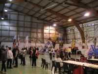
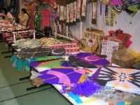
Pourtant, il y avait des choses intéressantes : des boutiques comme celles du Bilboquet, ou Vire-vole qui bradait son fond de boutique, des coréens, des chinois, des allemands, même des français, c'est pour dire !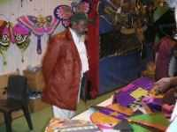
Abdul officiait gravement, mais toujours souriant dans sa barbe (surtout quand il ne comprend pas ce que vous lui dites et c'est fréquent)...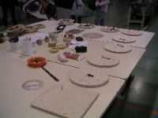
L'allemand, lui, présentait tous les stades de fabrication d'une bobine de haut niveau, assez mince, mais quand même avec roulement à billes et poignée orthopédique.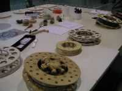
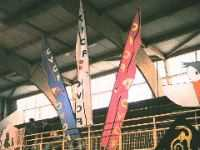
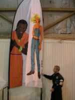
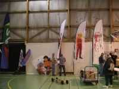
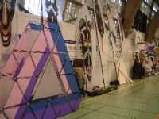
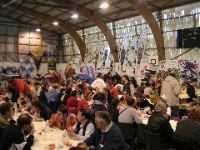
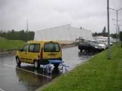
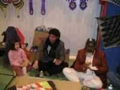
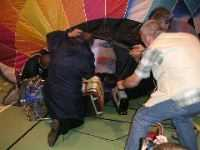
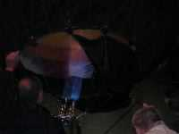
Elle s'est dressée lentement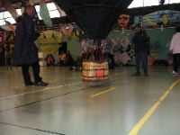
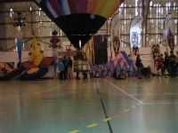
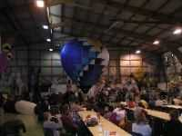
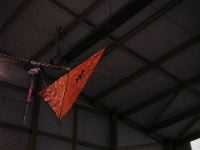
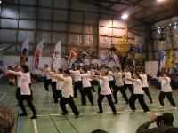
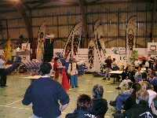
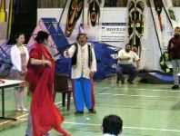
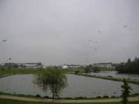
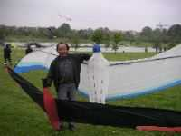
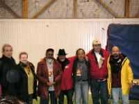
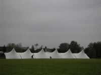